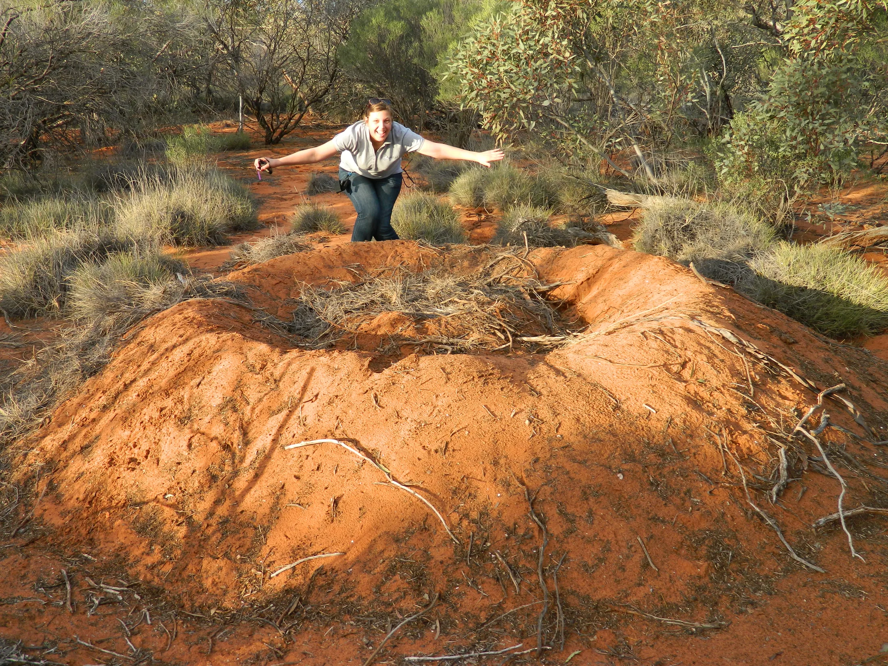
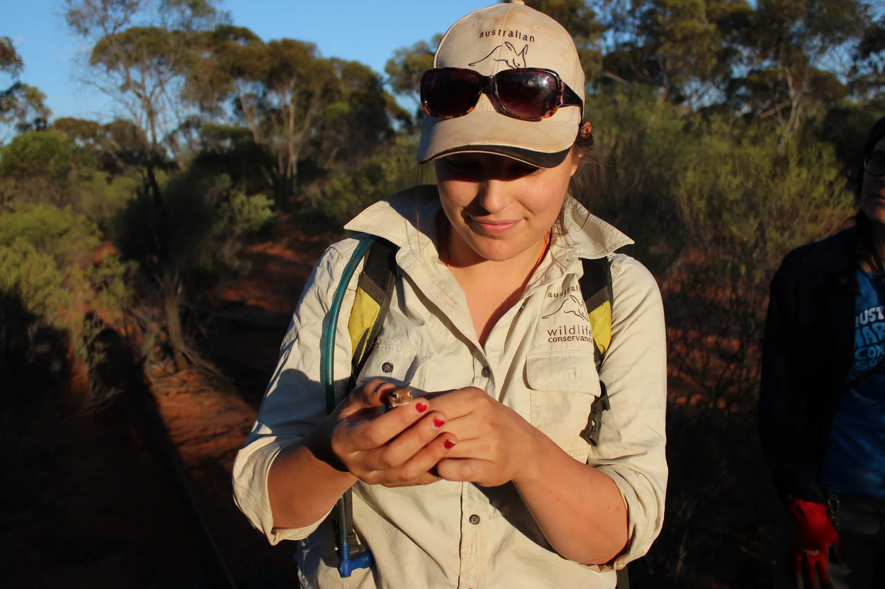
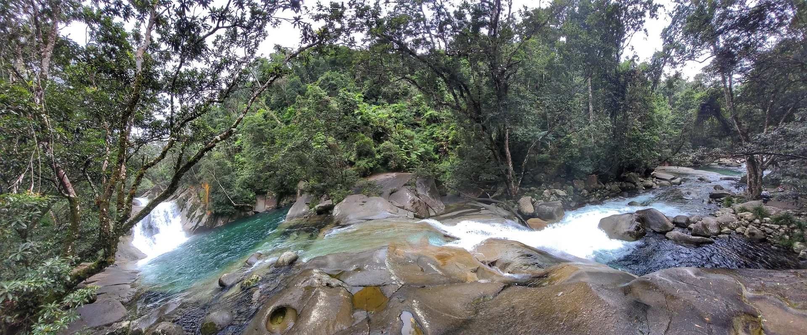
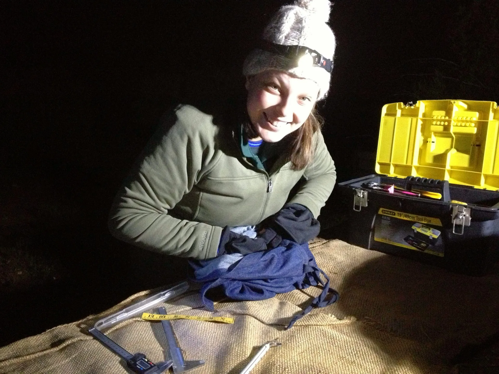

Partner to the Changemakers
Sure, I'll write your next grant. (Everyone stops there. I don't.)
The grant's the easy part. It's the funder gone cold, the sponsor nobody thanked, and the report due before anyone's clocked the date. That's where the money leaks out, and that's the part I own.
Book my discovery call(opens in new tab)Trusted by organisations including
You've handed it to the fundraising manager, split it across the team, and promised yourself you'd sort it next quarter. (You didn't.)
You didn't drop the ball. There was never a ball to drop - grant seeking got bolted onto a role that was already full, so it loses to whatever's on fire that day, which is most days. That's the bit I own: not one application, the whole pipeline, so it stops depending on whoever happens to have a spare hour. I'm Jess Hodgson, and Keystone Impact Solutions handles the grants, awards and funder relationships for conservation, environment and sustainability organisations, nonprofit or for-profit, based in Australia and working wherever you are.
"If there's an opportunity, mostly we let them pass. We don't even bother replying. Or everyone tries to contribute, and it's a real scramble."A founder, on a discovery call
Trust me, you want a scientist owning your funding.
Because a generalist needs it all explained first: the threatened species listing, the restoration method, the three-letter acronym nobody outside your field uses, and every explanation is time you don't have to give. I've got a PhD in conservation ecology and years working across the environment sector, so the explaining never has to start. That's when the good catches happen: the sugar glider misfiled as a northern glider, and the impact claim that needs pressure-testing before a funder ever sees it. You get to skip the vocabulary lesson, skip the double-checking, or skip both at once. I'm the one holding the technical detail so you don't have to translate it for me.

"When someone who has worked in the field of conservation then shifts into the administration side of things, it's gold. You get it Jess, so that makes it so much easier for us."Jean Thomas, Tenkile Conservation Alliance
No more going quiet on a funder the second the money lands.
You could spend the next year hoping the funder remembers you fondly. Or you hand the relationship to someone whose actual job is keeping it warm: the thank you, the update, the next conversation, not just the receipt. Funders in this sector talk to each other. The ones who felt looked after are the ones who fund you again.
"We took it, we planted the trees, and then we ignored them."A founder, on a $100,000 corporate gift with no follow-through
Three ways to get someone owning this.
Grant Scout
A monthly grant intelligence report matched to your organisation, so you always know what you're eligible for. And when one's worth chasing, I write it.
See Grant Scout →Strategic Funding Partnership
Your embedded funding strategist. Opportunities found, applications written, your team coached to win.
See the partnership →Keystone Scout
One view across your grants and your awards, so a win in one feeds the next.
See Keystone Scout →
Photo: MariaMy ears are burning
Olga had never entered an award in her life. Her business, BoogieCamp, runs Zumba Gold across 17 aged care centres and 7 community venues, in chair, hybrid and standing formats, for people most fitness awards don't know how to score. We worked out what the panel was actually scoring, and put her growth into 17 centres in 15 months and the fact she remembers every participant's name on the page. She came out a finalist in two categories at the 2025 AUSactive National Awards.
"Jess made it so much easier for me to submit my entry for my first ever awards! Her responses to the criteria questions summarised everything so beautifully and celebrated my impact and my achievements so magnificently, I was left feeling 'WOW, I AM AMAZING!'. Working with Jess for my first awards submission was an easy and empowering experience."
Olga Gjokmarkovic — BoogieCamp"Thanks to Jess's keen eye and insightful feedback, I secured several large research grants and several prestigious awards within Engineering."
Dr Nima HaghdadiSee the results in action
From conservation organisations to purpose-led businesses — real projects, real outcomes.
Discover past projects
I'm Jess: PhD ecologist, sector insider, and the person who reads all ten guideline documents, not just the top one (occupational hazard).
But the letters after my name aren't why clients hire me. They hire me because when a client had already built their whole proposal around fieldwork, I was the one still cross-checking all ten of the funder's guideline documents, and found the single buried line saying fieldwork-heavy projects weren't eligible at all. Changed the strategy before it went anywhere near a funder. Want to know what else that catches before it costs you?

Before you book the call
What does Keystone Impact Solutions actually do?
Keystone Impact Solutions finds, writes and manages the grants, awards and funder relationships your organisation doesn't have the capacity to own. That runs from a monthly grant intelligence report, through writing full applications and coaching your team to win them, to keeping funder relationships warm after the money lands. One person owning the whole funding pipeline, so it stops depending on whoever has a spare hour.
Who do you work with?
Conservation, environment and sustainability organisations, nonprofit or for-profit, based in Australia or anywhere else. The qualifier isn't your location or your headcount, it's a real project, values you won't compromise, and no spare capacity to chase the funding that would grow it. Registered charities, social enterprises and purpose-led businesses all fit.
Do I need to be a registered charity to work with you?
No. Keystone Impact Solutions works with nonprofits and for-profit organisations alike, as long as the work is real and the values line up. Structure matters less than mission, and plenty of fundable work sits in social enterprises and purpose-led businesses that aren't charities.
How much does it cost to work with you?
It depends how much you want to hand over. Grant Scout starts as a monthly intelligence report, a Strategic Funding Partnership is full ownership of your pipeline, and everything in between gets scoped on a discovery call rather than fixed to a number on this page. You'll always know the figure before you commit to anything.
Can I use ChatGPT to write a grant?
You can draft with it, but it won't win you the funding on its own. AI doesn't know which funders reward what, can't tell which of your outcomes a particular assessor will care about, and will confidently produce generic impact language that reads like every other application in the pile. A grant is a fit-and-evidence job, so a real person who knows conservation and knows your work is the difference between an application that's technically complete and one that actually gets funded. Being a PhD ecologist helps too: the science in your project doesn't need explaining to me first.
A free discovery call to work out what you actually need.
Start with Grant Scout, or hand over the whole pipeline. We'll sort out which on the call. And if it's not a fit, I'll say so.
Book my call(opens in new tab)